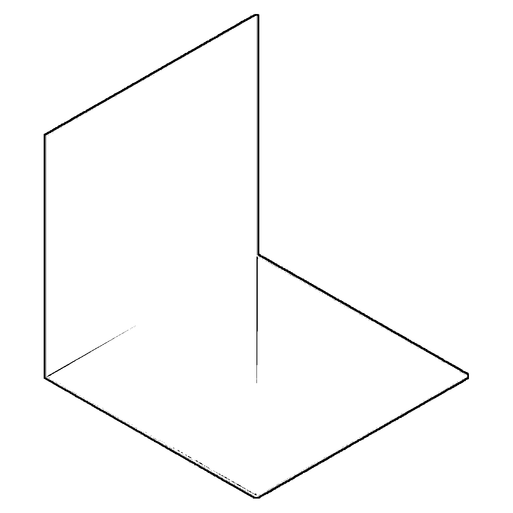
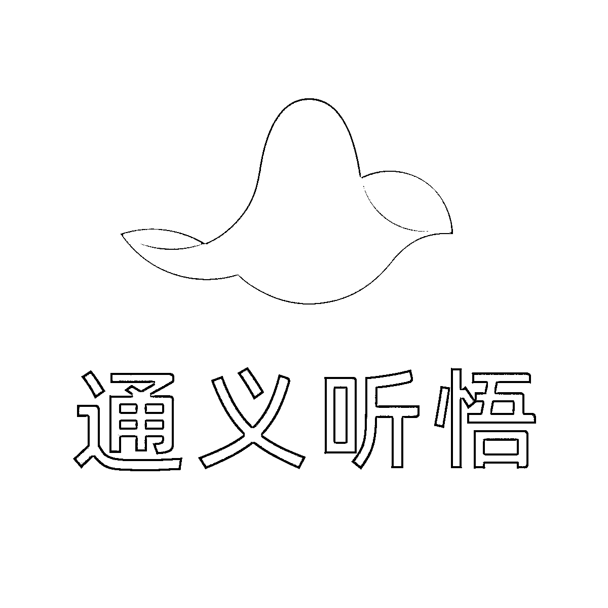

1. AI精选工具库
来源：https://t16jzwqrzjx.feishu.cn/docx/Uj8BdG3uhonRR5xNdx2cnKw5nuf
精选，我觉得是最能描述这个工具库的两个字；目前工具库总计18个模块100款工具。
过度冗余的信息会降低人的体验，所以我想把我在用看过的好用的AI产品汇总一下，于是有了这个工具库
🍭友情提示：PC端使用体验更佳，加⭐️产品代表强烈推荐；点击蓝色文字即可跳转工具面~
📚推荐阅读：1年AI实战经验复盘：我总结了3 个方法加速你的成长！

工具库快捷跳转链接
🍎 尝鲜软件推荐：近期值得尝鲜的软件
🏅 博主常用软件推荐：生活中高频使用的工具汇总
🎇 AIGC模型产品：AI来进行内容生成、对话的工具
🚴♂️ 效率工具：通过AI来提升自己的工作效率
🍔 生活AI产品：一些可以让生活更有趣的AI产品
📖 优质信息汇总：优质的AI信息渠道推荐
尝鲜软件推荐（每周一晚上9点更新）
智谱清影视频
海螺AI推出的视频生成工具 已开放使用
海螺视频
海螺AI推出的视频生成工具 已开放使用

Lumalabs
文生视频工具
效果还不错
可灵AI
快手视频AI大模型
拥有很强做视频能力
推特博主分析
基于wordware低代码平台搭建的工具
博主常用软件推荐

通义听悟
超好用的音频视频转文字、总结工具
ChatGPT
目前已知最强的人工智能产品
Kimi
国货之光
支持20万上下文
Perplexity
AI搜索工具，支持多渠道信息检索
秘塔AI搜索
直接给到你想要的答案，再也不看广告
一、AIGC模型产品
1.对话产品
学习大模型知识：大语言模型原理 + 提示词 API调用请参考文档：
推荐模型产品
- ⭐️ ChatGPT：国外大模型，AI赛道TOP1；现免费限额开放GPT4o模型，免费无限额开放GPT4o-mini模型；普通用户可以免费使用GPTs；GPT4及4o用支持图片多模态识别及生成功能。
- Claude：国外大模型，最近发布的Cluade3.5-sonnet仅次于GPT4o；对编程小白及其友好的Claude Artifacts功能，可以帮助小白进行产品的开发（案例点这）。
- Gemini：国外大模型，Gemini 1.5 Pro支持长达一百万个标记的上下文窗口，Gemini 1.5 Pro 0801登顶全球模型竞技场第一名；1.5 pro具备超强的多模态识别能力，能够从几十分钟的视频中找到肉夹馍画面（多模态体验点这）。
- ⭐️ Kimi：国内大模型，适合小白上手使用的模型产品；在写文案、阅读文章、翻译等场景kimi都有很棒的效果。
- ⭐️ Deepseek：国产大模型，大模型第一梯队产品，适合开发者用户使用；在模型能力和算力成本上deepseek做到了行业领先，100万token价格为2元，其产品在API能力上极强。
- 豆包：国产大模型，APP端语音对话能力体验极好；如果你需要一个人陪伴你聊天，那不妨来试试豆包。
其它模型产品
- Llama3：国外开源大模型，是目前能力最强的开源模型之一；支持 8B、70B 和 405B三个版本，可以免费商用。
- 智谱清言：国产大模型，有着不错的多模态能力，智能体体验较为不错，适合高频智能体使用的用户。
- 海螺AI：国产大模型，支持PC端语音电话，同时支持声音克隆，小海螺也拥有很不错的文本处理能力。
- 通义千问：阿里国产大模型，多模态图片解析能力较强，需要图片解析的可以重点使用。
- 元宝：腾讯国产大模型，支持微信公众号信息检索，适合于需要整理公众号信息的用户。
- 面壁小钢炮：国产开源端侧模型，能够再6GB内存的iPad上部署，支持视频实时解析能力，足以媲美GPT4模型的多模态理解能力
智能体Agent平台
- ⭐️ Coze：简单易上手，建议新手使用；支持云雀、kimi等多个大模型，支持文字工作流、图片工作流两种形态，支持上传知识库，小白可以用coze轻松的搭建一个专属智能体。
- ⭐️ Dify：更加开放的智能体平台，适合中高阶选手；支持几乎所有热门大模型产品的接入；适合爱折腾需要搭建复杂业务工作流的同学，但其拆件数量少于coze，知识库的上传教coze相比为复杂。
- Coze（海外版）：海外版与国内版的差距主要是模型和拆件的区别，模型海外版支持GPT4一系列模型，但目前国外版本开启了收费模式，对GPT4的调用有所限制。
2.绘画产品
AI绘画学习手册：midjourney入门+web ui 教程 +comfy ui教程
- ⭐️ Midjourney：国外AI绘画模型，近期上新了网页版本，新用户免费25张图，适合设计创意使用
- ⭐️ Stable Diffusion：国外AI绘画开源模型，可以加载多种模型来完成特定的绘画效果，支持本地部署使用
- ⭐️ Liblib：国内AI绘画创作平台，支持原汁原味的web UI和comfy UI在线AI绘图工具，让你省去本地化部署的烦恼；同时它还拥有超过10万种模型可供免费下载。
- ⭐️ Civitai：国外AI绘画模型网站，你可以去这里下载你想使用的模型，配合SD你可以尽情创作
- 悠船：Midjourney国内企业版本，目前正在内测中，暂时未开放个人使用
- 堆友：国内AI绘画社区，支持多种图像生成，可以更加便捷的使用
- 轻云图：AI认知解析，可以一键生成文字云图
- 即梦Dreamina：国内AI绘画模型，由字节出品，能够生成图片和视频
- 通义万相：国内AI绘画模型，主要能够进行卡通风格的内容创作
3.音频生成
- ⭐️ Suno AI：国外音乐生成软件，你可以用它来生成一首歌
- 网易天音：国内AI生成软件，由网易云音乐出品，可以AI编曲、AI作词、AI生成歌，更加专业的音乐生成工具（目前内测中，需要白名单才能使用）
- Vall-e-x：国外微软的音频生成技术论文，目前工具尚未发布使用
- SoVITs：GitHub的开源项目，可以进行部署来进行声音生成
- 魔撘社区-个人声音定制：国内AI社区，可以在上边录入声音然后生成自己的声音
- AI COUSTICS：国外AI音频处理软件，可用于音频后期处理
- Voice Engine：国外OpenAI的音频克隆产品，只需要文本和15秒语音就可以克隆音频，目前工具尚未发布使用
4.AI视频
- ⭐️ Sora：国外AI视频产品，可以生成1分钟视频长度同时保证视频稳定性，目前暂未开放使用
- ⭐️ Runway：国外AI视频产品，能够将文本、图片等输入快速转换为高质量的视频内容
- Dreamina：国内AI产品，由字节跳动出品，有用文生图等功能，目前视频生成功能在开放内测名额中
- Pika：国外AI视频产品，它能够根据简短的文字描述快速生成短视频，支持多种风格，如3D动画、动漫等
- Move AI：国外AI视频产品，可以通过2D的视频拍摄来制作成3D的内容
- Pixverse：国外AI视频产品，输入文本提示即可创造出高清逼真的视频内容，支持多种风格如动漫、写实和3D
- Stable Video Diffusion：国外AI视频产品，SD的视频开源模型，可以通过部署来进行使用
- Animate Anyone：由阿里巴巴智能计算研究院开发的一款开源框架，专注于将静态图像中的角色或人物动态化
- Genmo：国外AI视频产品，通过上传图像和文字来生成高清视频，能够产出1080p至2K分辨率的高清视频内容
- DomoAI：国外AI视频产品，可以把你的视频转化成各种风格：动漫、卡通、像素等多种风格
数字人产品
- DID：国外数字人厂商，只需要通过图片和文字/语音来生成数字人视频，对图片质量要求较高
- Heygen：国外数字人厂商，有可以供选择的真人模型，也可以自己建模来生成数字人
- 硅基智能：国内数字人供应商，通过录制视频定制化生成数字人，可以用于短视频和直播
- 风评智能：国内数字人供应商，通过录制视频定制化生成数字人，可以用于短视频和直播
- Adobe express：国外卡通角色视频生成工具
二、效率工具
1.办公提效神器
AI搜索 & 浏览器助手
- ⭐️ Perplexity：国外AI搜索网站，根据你的问题给出汇总答案，支持多个渠道进行信息搜索，可以定向检索科研、Youtube等内容
- ⭐️ 秘塔AI搜索：国内AI搜索网站，根据你的问题给出汇总答案、相关事件、思维导图等
- Genspark：AI搜索引擎 搜索结果会生成定制页面
- Copilot：国外AI助手，支持多模态等功能，它也可以通过Bing的搜索来给到你问题的答案
- 360AI搜索：国内AI搜索网站，它会在搜索结果时给到图片、视频相关来源
- 360AI浏览器：聚合了AI搜索、AI阅读、AI看视频、AIGC内容生成等多个模块
- Arc：国外AI浏览器，它在浏览器内内置了AI功能，更加方便浏览器上的使用
- 深言达意：国内反向搜索软件，可以根据你想搜索的内容，反向去推相关词汇和句子。
- Monica：国外AI产品，一款出色的浏览器插件产品，可以帮助你快速处理选中的文字内容、进行聊天对话
- Chandler：国外AI产品，接入了GPT4、claude3等大语言模型，可以在你使用浏览器工作时更方便进行对话
PDF 阅读 & 音频 视频总结
- ⭐️ 通义听悟：国内AI产品，它能够实时将语音转化为文字，并记录、整理、分析、提炼关键信息
- BiBiGPT AI音视频助理：国内AI产品，一键整理在线音频和视频的内容，生成思维导图和稿件
- Summarize：国外AI产品，专门用于Youtube视频的内容整理，能够生成内容总结和思维导图
- Chatdoc：国外AI产品，一款基于ChatGPT的AI文件阅读工具，通过上传文档来帮助用户快速阅读和学习
- EasyPDF.ai：国外AI产品，通过AI驱动的聊天界面与PDF文件进行交互，实现文本提取和内容总结等功能
- Cubox：国内AI产品，一款跨平台的网络收藏工具，现在可以通过AI进行更高效的阅读
PPT & 思维导图
- ⭐️ Gamma：国外AI产品，可以能够根据用户简短的描述快速生成精美的PPT（支持大纲导入、AI文字多种模式）
- ⭐️ AI PPT：国内AI产品，根据主题一键智能生成PPT，也支持Xmind导入生成PPT
- Mindshow：国内AI产品，提供一键智能生成PPT、自动设计图片、多格式文档导入等功能
- 美图AI PPT：国内AI产品，只需输入一句话描述您的PPT主题，美图AI PPT便能在短短10秒内生成一套完整的PPT
- iSlide：国内AI产品，利用AI技术简化设计流程，提供一键优化、文本优化和丰富的模板库
- Chatmind：国外AI产品，通过自然语言对话生成导图，并且可以通过对话来进行导图内容的修改
- Processon：国内AI产品，一款在线协作绘图平台，提供强大的在线作图工具，支持流程图、思维导图、原型图等
- TreeMind竖图：国内AI产品，它能够通过一句话生成详实的思维导图，提供海量模板和素材资源库
- Albus：国外AI产品，一款集成了AI的白板软件，用于探索、学习、创造
- 博思白板：国内AI产品，是一个集AIGC、一键PPT、思维导图、笔记文档于一体的在线协作平台
AI翻译
- ⭐️ 沉浸式翻译：国内AI产品，是一款Chrome扩展插件，支持PDF、网页、视频双语对照翻译
- Translingual：国外AI产品，通过大语言模型来进行翻译
- Language Reator：国外AI产品，是一款Chrome扩展插件，专为观看视频学习外语设计；它能列出视频字幕，支持暂停和重复播放特定句子，鼠标悬停显示单词信息，提供双语字幕和机器翻译
图像优化
- ⭐️ Remove.bg：国内AI产品，可以一键抠图然后更换背景
- ⭐️ 佐糖：国内AI产品，具备一键抠图、图像增强清晰度等功能
- ⭐️ Remini：国外AI产品，五一期间大火的黏土AI产品，苹果iOS下载体验可以使用黏土功能
- Magnific：国外AI产品，可以提升图像的清晰度、对图像进行画面增强
- Clipdrop：国外AI产品，具备图像自动填充、换人、抠图、背景替换、裁切等多种图像处理功能
- Krea AI：国外AI产品，可以生成图片和增加图像的清晰度
- ARC：国内AI产品，腾讯ARC实验出品，在人像修复、人像抠图、动漫增强上有着非常不错的效果
- Imagestool：支持图片多种处理，可以用视频转gif
- Palette：国外AI产品，可以用来给黑白照片上色，支持多种色彩模式
工作任务处理
- Mail Master：国外AI产品，专门用来写邮件，支持多种邮件多种风格
- Magic Todo：国外AI产品，是一个任务分解工具，可以将任务细分为小任务，有助于工作进行任务拆分
- Chartcube：国内AI产品，通过AI来创建多种形态的表格，支持折线、饼状等数十种表格图像
2.企业提效工具
- LUMA AI：国外AI产品，是3D内容创作工具，利用AI技术从照片、视频中快速生成高质量的3D模型
- Getfloor plan：国外AI产品，能够将简单的平面图或草图转换成详细的2D和3D平面图以及360°虚拟导览
- 绘蛙电商助手：国内AI产品，通过AI技术提升淘宝、天猫商家创作效率，提供营销文案生成和AI模特训练等功能
- 幂律合同助手：国内AI产品，专门用于合同签订，通过AI技术来让你的合同更加安全可靠
- 实在智能RPA：国内AI产品，通过RPA+AI的方式来让RPA的应用变得更加简单
- 近屿智能AI面试官：国内AI产品，通过AI面试的形式来提升企业的面试效率
三、生活AI产品
1.角色对话产品
- Character：国外AI角色扮演网站，有多种任务角色扮演对话：埃隆马斯克、心理专家、面试官等等
- Flowgpt：国外AI对话社区，包含角色、编程、工程师等多种角色，还接入了多个大语言模型可以进行对话
- 林间聊愈室：国内AI聊愈APP，通过卡通角色和对话的形式让你能够放松一下，得到安慰
- hume：国外AI对话，通过声音对话的形式来让你感觉到被陪伴
2.笔记AI
- Notion AI：在Notion笔记上增加了许多AI功能，可以帮你扩充、总结、翻译等方式处理文本，提升笔记效率
- 火龙果写作：基于AI的写作工具，提供写故事、校对、同义改写、文本续写、文档翻译等功能
- 秘塔写作猫：基于AI的写作工具，提供全文写作、广告语、论文、短视频文案等多种写作功能
四、优质信息汇总
1.AI周刊
- 歸藏的AIGC周刊：每周发布关于AI技术、产品动态、行业趋势的信息，提供最新的AIGC行业洞察和实用信息
2.播客
- ⭐️ 42章经：高质量AI访谈对话播客，可以听到很多AI创业者的深度访谈
- OnBoard：专注AI领域的播客节目，分享行业洞见、前沿技术和市场趋势
3.社区
- ⭐️ 即刻AI探索站：国内质量最高的AI社区，有很多大咖在分析最新和高质量的AI信息
- 魔搭社区：魔搭是一个开源的模型即服务共享平台，为AI开发者提供灵活、易用、低成本的一站式模型服务产品
4.公众号
- ⭐️ Super黄的念想：AI产品专业分析账户，有着非常精彩的产品分析文章
- ⭐️ hanniman：AI行业产品老兵，有着非常不错的行业判断文章
- ⭐️ 云舒的AI观察笔记：AI精选工具站作者，产品经理老兵，会写很多AI相关的产品内容
🌟 知识库内容汇总